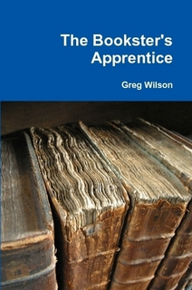
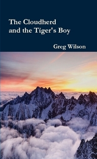
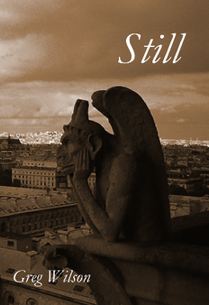

Take a mountain, lift it into the air, and set it adrift: that is Avaunt. But look closer—there, in a village on its starboard flank. A girl is running for her life. She just felt the mountain shake for the first time in centuries, but that's not what she's afraid of. She's afraid of what the boy chasing her will do if he catches her…
under revision - read

In the north, where the Brumoso Mountains rise above the endless squabbles of the Ninety Kingdoms, a girl is dreaming about riding on clouds while she does her chores. She is no longer a child but not yet an adult, and has no idea that her world is about to change forever…
under revision - read

Once upon a time, a young puppet named Still lived in a city full of wonders. This is the story of the worst thing that ever happened to her: about violins and gargoyles, glass rats and friendship, and in the end, about—ah, but that would be telling…